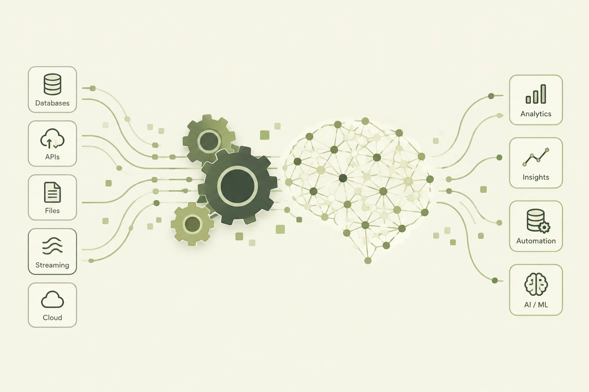

NOAA Fishing Survey Data Project
Python ETL pipeline that processes NOAA fishing survey data into a DuckDB warehouse with dbt, orchestrated by Prefect and served through an interactive Streamlit dashboard.
Welcome to my portfolio site, where you can explore my data-related projects.

Python ETL pipeline that processes NOAA fishing survey data into a DuckDB warehouse with dbt, orchestrated by Prefect and served through an interactive Streamlit dashboard.
Ingests fishing-related YouTube video data via API into MongoDB, then visualizes trends and channel performance in a Metabase dashboard.
Serverless monitor running YOLOv8 object detection on a live NJ beach stream every 30 minutes via GitHub Actions. Stores annotated clips in Cloudflare R2 and sends Gmail alerts when car or person thresholds are exceeded.
Single-page app for comparing monthly payments and total cost across 15, 20, and 30-year loans, with amortization schedules and debt-to-income analysis based on loan size and property taxes.
Browser-based calculator for Shapeoko CNC routers that gives instant feed rate, plunge rate, depth of cut, and chipload recommendations by tool, material, and spindle speed. Zero dependencies.
Full-stack domino game simulator with pluggable player strategies and Monte Carlo batch runs. A React + FastAPI app compares strategy win rates with confidence intervals and visualizes convergence, containerized with Docker.